B6 · SCENE STUDIO
You can now edit the 3D shop, garden and house live, approve an edit for the game, and make cut scenes from a game event.
On the Harry branch, not live yet.
Overnight round, 20 Oct 2026. In Admin → Patch notes this is v0.70.
CHECK THESE
ADDED
Only the 3D Signing and the Manager’s Office could be edited live (the 19 Oct notes, step 3a).
You answered 3D-5: do step 3b first, which is the shop, the garden and the house.
The Shop, Garden and House now edit live, like Signing and the Office. Each has a Walking view and card or room views. You can set Turn, Rise, Distance and Lens, the key light (angle, colour) and the exposure. You can drag the preview and drag the sun. If you make no edit, the scene plays exactly as before.
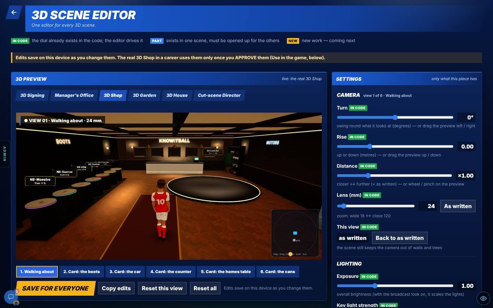
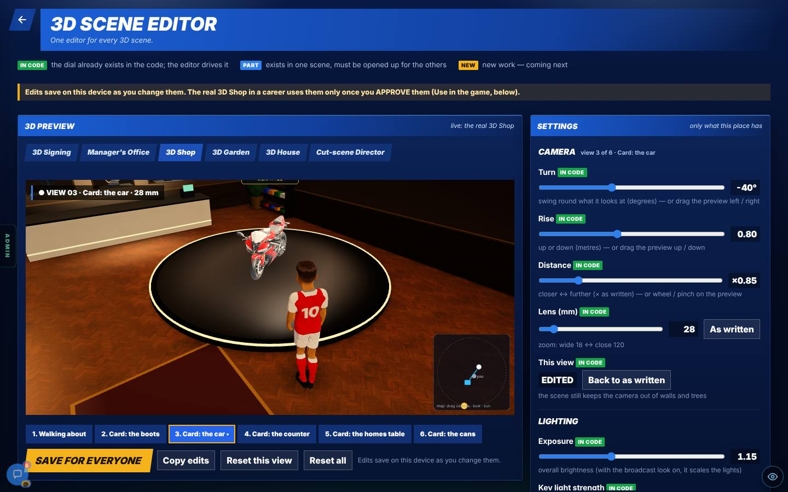
More pictures (3): the garden, the house and a phone
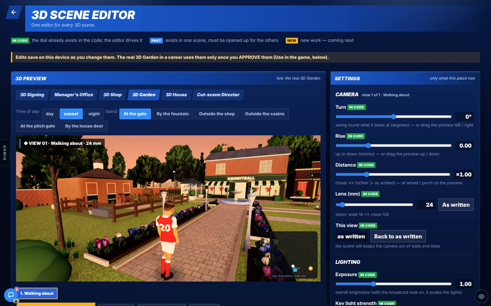
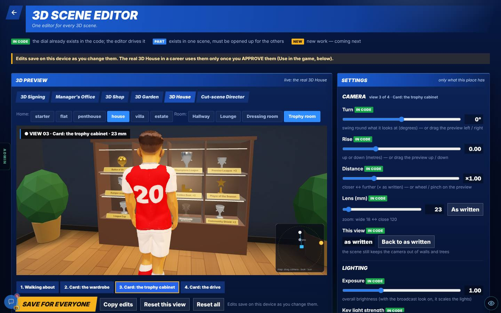
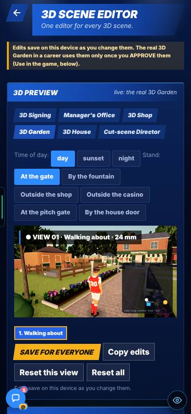
Edits saved on a device and in the team database. The game never read them (the 19 Oct notes).
You answered 3D-4: an Approve button. Approved edits are used in the game, you can still edit them, and you choose when and where.
Every place has a Use in the game panel. Press ✓ Approve (or Withdraw approval). Where: in a career, on the test page, or both. When: always, or one moment only (signing: the first contract or a move; the shop: entry; the garden: day, sunset or night; the house: which home; the Director: which event). The game reads only approved edits.
Measured: an approved office edit moved the office test camera. It was reverted after the test.
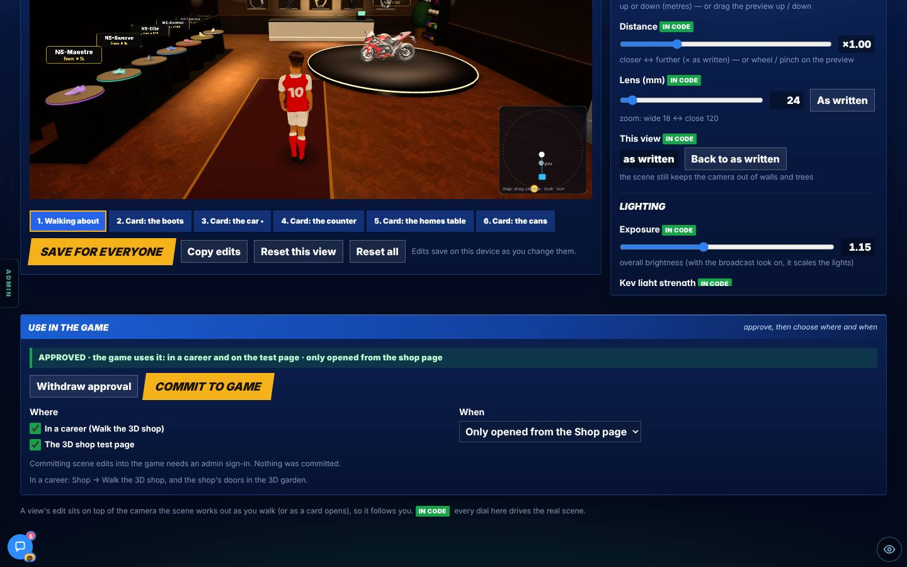
More pictures (1): the same panel on a phone
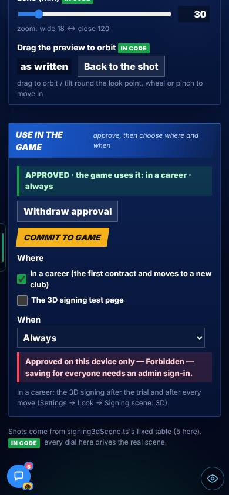
You said: “I would love it to commit straight into the game” (3D-3). Saving to a database alone does not change the game’s files.
The game keeps its own copy of the approved edits as a file in its code. Something must write to that file.
A Commit to game button writes the approved edits into that file on main. It needs an admin sign-in and a GITHUB_TOKEN. With no token it says so in red and commits nothing. Each commit starts a Vercel rebuild of the live site. The game reads the committed file and the shared approved rows, and the newer one wins.
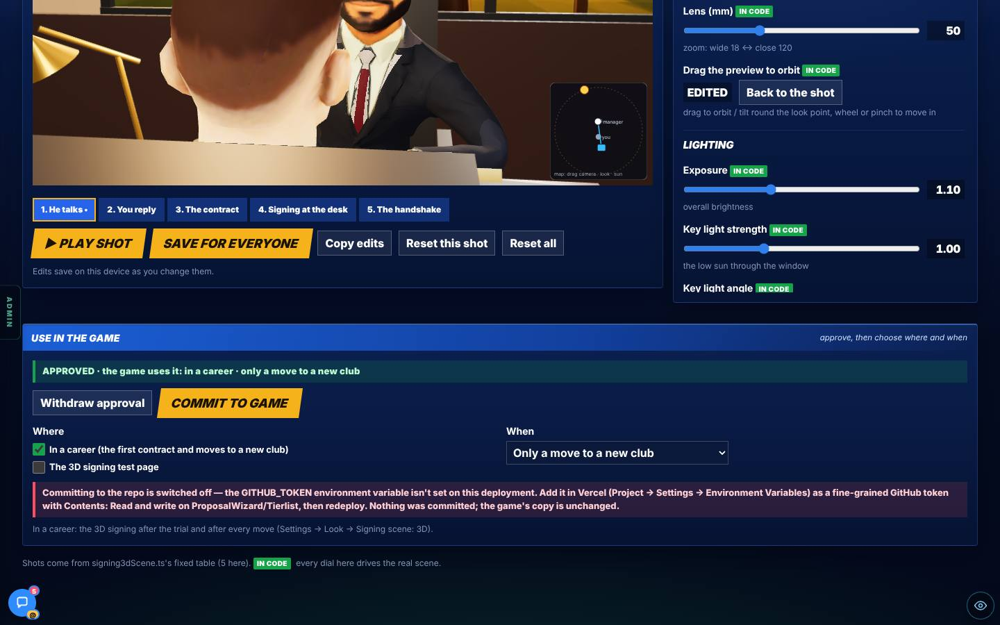
You asked how generated cut scenes work and wanted a studio for them (GEN-1). The generator shared a page with the scene editor.
You asked for it as its own admin page, in the Studio tab (GEN-1).
A new page, Studio → Scene generator. Pick an event (18), a feeling (12), how big the moment is, how intense, and a seed. Press Generate or Re-roll. It shows the scene, and beside it the recipe: place, mood, length, people, the film-rules score, the beats and the shots. Mark it Good or Bad. Keep as a hand-made scene opens it in the editor.
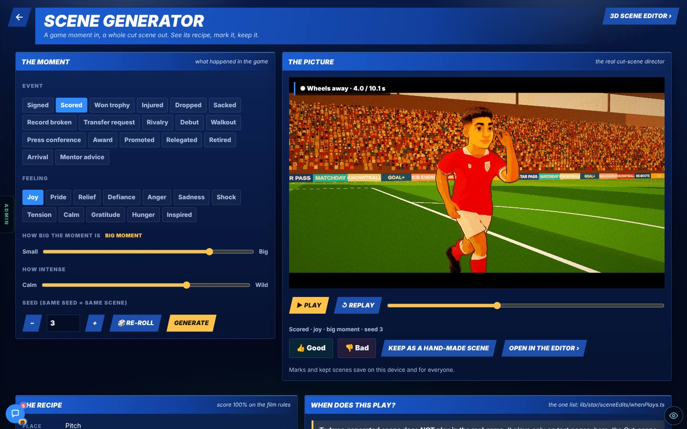
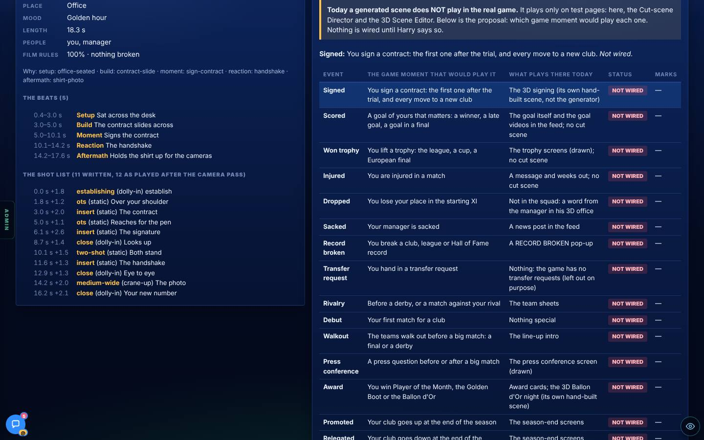
More pictures (1): on a phone
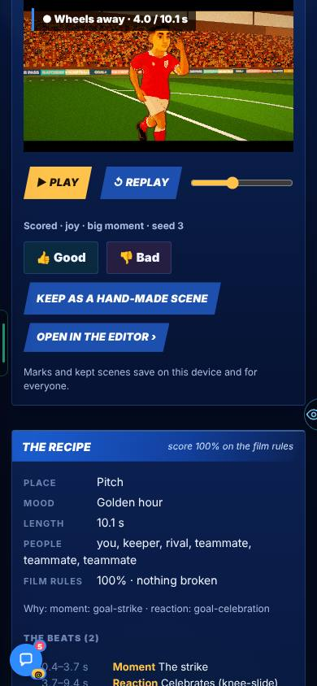
How generated scenes work (the 19 Oct explainer)
The explainer, with four generated stills, is on the Scene Editor 3a page of the 19 Oct tab.
You said: “I just don’t know when they play and why, but we need to fix that” (answer 31).
Generated scenes only play on test pages today. Nothing said so on screen.
The generator page now has a table of 18 events. Each row says which game moment would play it, what plays there today, and a status. All 18 say “Not wired”. A test fails if a career screen starts calling the generator while every row still says Not wired.
CHANGED
Six pages kept the old full screen: 3D Signing, Manager’s Office, 3D Shop, 3D Garden, 3D House and the Style test. You said to do them with the scene editor work (A-8).
You said to do them with the scene editor work, so they waited for this build (A-8).
All six now sit on the Broadcast frame (one back arrow, the page title, the side menu). The report counts 37 of 43 → 43 of 43. Add ?bare=1 to the address to get the old full screen back.

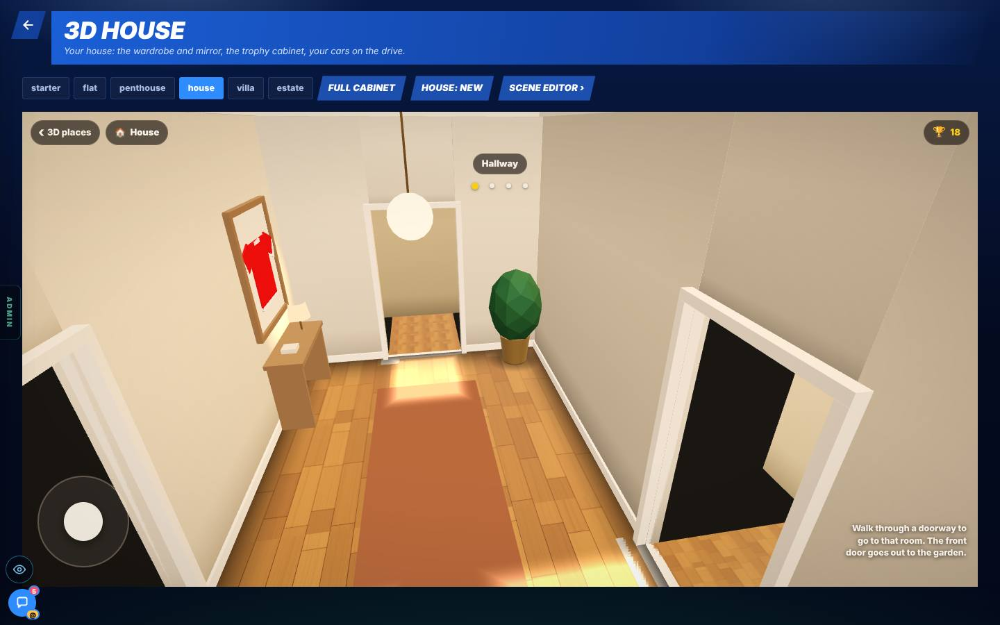
More pictures (4)
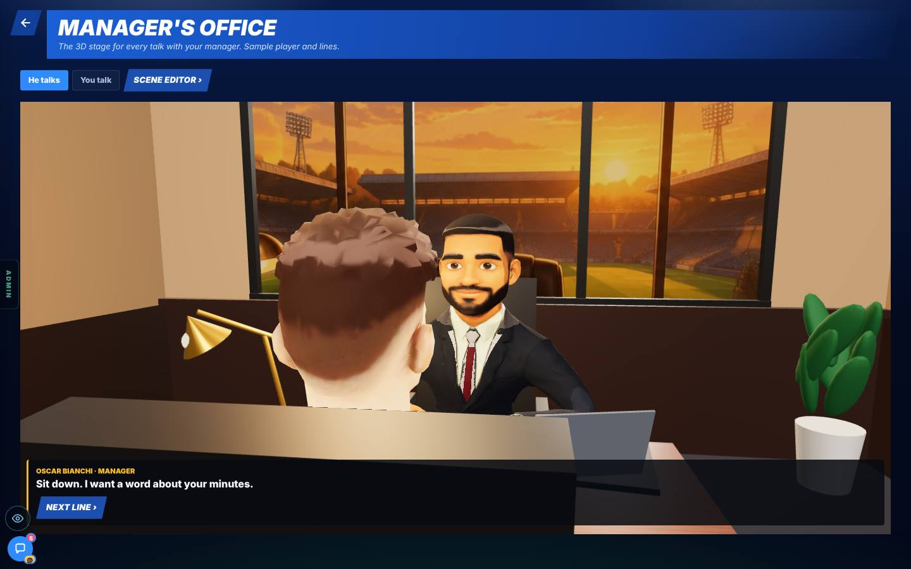
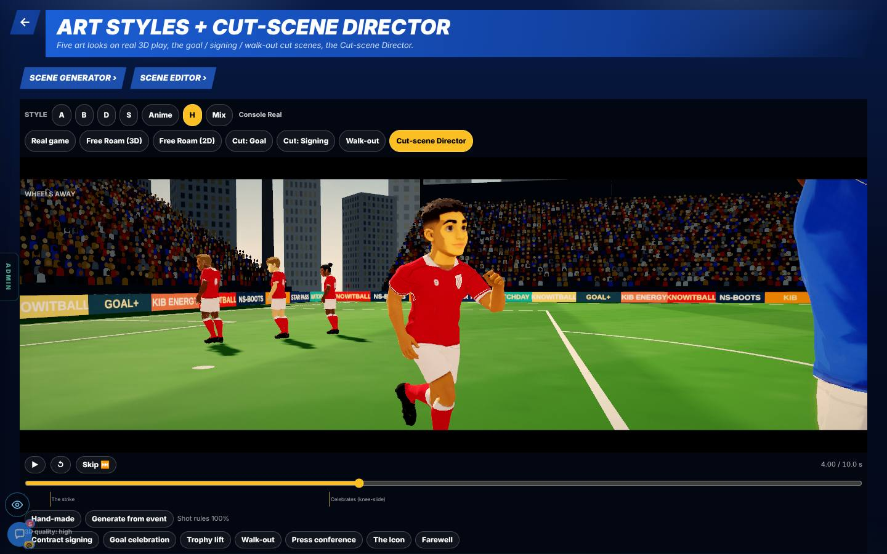
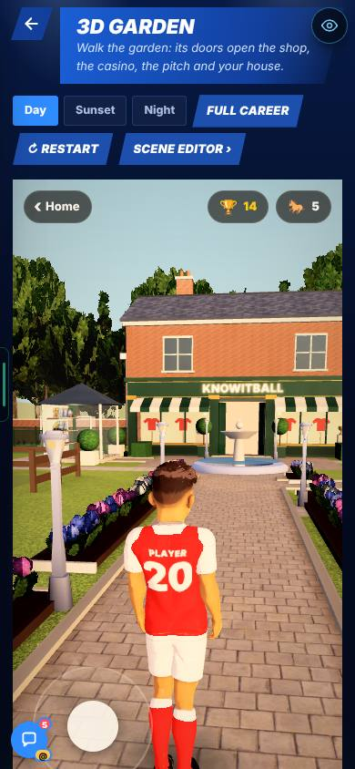
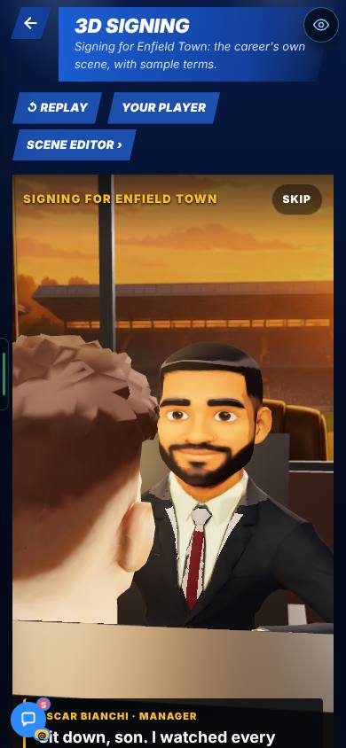
FIXED
On the framed shop page the game time stayed at 0.
The shop, garden and house scenes could stop the shared 3D renderer when a build was thrown away in the middle of starting.
Only the renderer’s owner can set or stop it now. Game time moves on the framed shop page.
NEXT
All 18 rows say “Not wired”.
You said (GEN-3) they can go in the game if they are good, for the moments that suit them. The table is the proposal. Nothing is wired until you say so.
Waiting for your pick (below).
THE NUMBERS
The numbers, if you want them
Office test camera after an approved edit. 44° → 19.4° with a 70 mm lens. Reverted after the test.
Admin pages on the Broadcast frame. The report says 37 → 43 of 43.
Scene generator. 18 events, 12 feelings. 18 rows in “When does this play?”, all “Not wired”. No new database file.
VIDEOS
The editor is judged by stills. Say if you want one, for example the preview drag or the sun drag.
SEEN / NOT SEEN
Seen on a screen
- The editor on the Shop, Garden and House (computer, and the garden on a phone)
- The Use in the game panel, approved, with Where and When
- The “no token” message on Commit to game
- The Scene generator on a computer and a phone, with its recipe
- The “When does this play?” table
- All 6 pages on the Broadcast frame
Measured (numbers)
- An approved office edit moved the office test camera from 44° to 19.4° (70 mm lens), then it was reverted
- Framed pages: 37 → 43 of 43
- The framed shop page’s game time now moves
Reasoned, not seen
- Career paths with a real admin save: the report says they are reasoned, not seen
Not seen / not done
- A real commit into the repo (the test machine has no token)
- An approved edit playing in a real career
- Any generated scene playing in the career (none is wired)